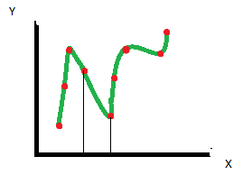
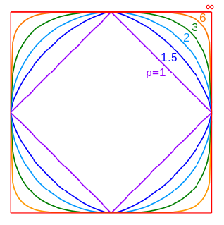
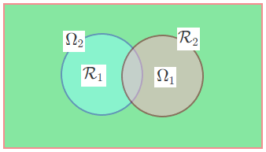
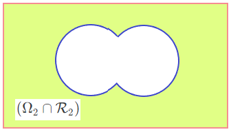
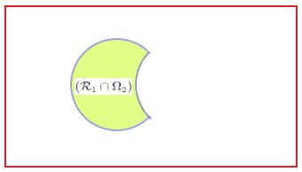
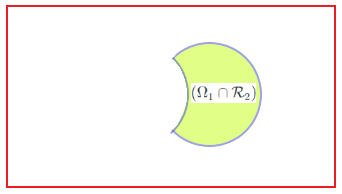

1 Pre-Processing
- Numeric
- Zero mean, unit variance: x’= (x-\mu)/ \sigma
- In interval [0,1]: x'=(x -\min)/(\max - \min)
- Categorical
- Encoded as number in such a way that there is no sense of ordering, for e.g. if there are 3 classes apple, orange and banana, and encoded as 1,2,3 respectively, it appears as apple comes first than orange, which is not correct. So the correct way to encode is one hot encoding.
- Also here only equality testing is meaningful.
- Ordinal
- Encoded as numbers to preserve ordering
- \le, \ge operations meaningful
2 Feature Extraction from Data
- Images
- Pixel values, Segment and extract features, Handcrafted features: HOG, SIFT,etc
- Deep learned features!
- Text
- Bag of words, Ngrams
- Deep learned features!
- Speech
- Mel Frequency Cepstral Coefficients (MFCCs), Other frequency based features
- Deep learned features!
- Time varying sensor Data
- Statistical and moment based features (mean, variance) etc
3 Challenges
- Structured input/Structured output
- One fix: Attribute = root-to-leaf paths
- Missing data
- Fix: Fill in the value, Introduce special label, remove instance, remove attribute, Use classifiers that can handle missing values
- Outliers
- Fix: Remove, Threshold, Visualize!
- Data assumptions
- Generated how? Sources?
- Smooth? Linear? Noise?
4 Class Imbalance
Almost all classifiers attempt to reduce global quantities such as the error rate, not taking the data distribution into consideration.
As a result, examples from the overwhelming class are well classified whereas examples from the minority class tend to be misclassified.
- Are all classifiers sensitive to class imbalance?
- Decision Tree:Very sensitive to class imbalances. This is because the algorithm works globally, not paying attention to specific data points.
- Multi Layer perceptrons (MLPs): are less prone to the class imbalance problem. This is because of their flexibility: their solution gets adjusted by each data point in a bottom up manner as well as by the overall data set in a top down manner.
- Support Vector Machines (SVMs) SVMs are even less prone to the class imbalance problem than MLPs because they are only concerned with a few support vectors, the data points located close to the boundaries.
4.1 Solution
- Collect more data!
- Change your performance metric:
- Confusion Matrix, Precision Recall, F1 score, etc.
- Resample dataset
- Generate synthetic samples
- Try penalized models
- Try a different perspective anomaly/change detection
- At the data Level: Re Sampling
- Oversampling (Random or Directed)
- Under-sampling (Random or Directed), (not good for model performance)
- Active Sampling
- At the Algorithmic Level:
- Adjusting the Costs
- Adjusting the decision threshold / probabilistic estimate at the tree leaf
- Under-sampling (random and directed) is not effective and can even hurt performance.
- Random oversampling helps quite dramatically. Directed oversampling makes a bit of a difference by helping slightly more.
- Cost adjusting is about as effective as Directed oversampling. Generally, however, it is found to be slightly more useful.
5 SMOTE
SMOTE = Synthetic Minority Oversampling Technique
- For each minority example k, compute nearest minority class examples (i,j,l,n,m)
- Synthetically generate event k_1 such that k_1 lies between k and i
- Randomly chose an example out of 5 closest points.
6 Using Large Datasets
- At large data scales, the performance of different algorithms converge such that performance differences virtually disappear.
- Given a large enough data set, the algorithm you’d want to use is the one that is computationally less expensive.
- It’s only at smaller data scales that the performance differences between algorithms matter.
- CPUs vs GPUs
- Deep learning has greatly benefited from GPUs
- Map Reduce/ Hadoop , Apache Spark, Vowpal Wabbit frameworks
- Many learning algorithms amenable to partitioning of computations
7 Generalization Error
Components of generalization error
Bias: how much the average model over all training sets differ from the true model?
- Error due to inaccurate assumptions/simplifications made by the model
Variance: how much models estimated from different training sets differ from each other
MSE in terms of bias and variance
\color{blue} \text{MSE}=\color{red} \underbrace{\text{Bias}^2}_{\text{error due to incorrect assumption}} + \color{green} \underbrace{\text{Variance}}_{\text{error due to variance in training}} + \color{purple} \underbrace{\text{Noise}}_{\text{Unavoidable error}} \tag{1}Suppose the ultimate true function is f, the one which we ideally want to learn. Our target is t. Relation between t and f is as follows t=f+\epsilon where \epsilon is noise and it’s expected value is considered to be zero i.e. \mathbf{E}[\epsilon]=0
We consider y_i to be predicted output by a Neural Network then MSE is given as \mathrm{MSE}=\frac{1}{N}\sum_{i=1}^n {\left(t_i -y_i \right)}^2 Find expectation of MSE \begin{align*}{} \mathit{\mathbf{E}}\left\lbrack \mathrm{MSE}\right\rbrack &=\mathit{\mathbf{E}}\left\lbrack \frac{1}{N}\sum_{i=1}^n {\left(t_i -y_i \right)}^2 \right\rbrack \\ &=\frac{1}{N}\sum_{i=1}^n \mathit{\mathbf{E}}\left\lbrack {\left(t_i -y_i \right)}^2 \right\rbrack \end{align*} Now we examine \mathit{\mathbf{E}}\left\lbrack {\left(t_i -y_i \right)}^2 \right\rbrack \begin{align*}{} \mathit{\mathbf{E}}\left\lbrack {\left(t_i -y_i \right)}^2 \right\rbrack &=\mathit{\mathbf{E}}\left\lbrack {\left(\left(t_i -f_i \right)+\left(f_i -y_i \right)\right)}^2 \right\rbrack \\ &=\mathit{\mathbf{E}}\left\lbrack {\left(t_i -f_i \right)}^2 +{\left(f_i -y_i \right)}^2 -2\left(t_i -f_i \right)\left(f_i -y_i \right)\right\rbrack \\ &=\mathit{\mathbf{E}}\left\lbrack {\left(t_i -f_i \right)}^2 \right\rbrack +\mathit{\mathbf{E}}\left\lbrack {\left(f_i -y_i \right)}^2 \right\rbrack -\mathit{\mathbf{E}}\left\lbrack 2\left(t_i -f_i \right)\left(f_i -y_i \right)\right\rbrack \\ &=\mathit{\mathbf{E}}\left\lbrack {\left(t_i -f_i \right)}^2 \right\rbrack +\mathit{\mathbf{E}}\left\lbrack {\left(f_i -y_i \right)}^2 \right\rbrack -2\left(\mathit{\mathbf{E}}\left\lbrack t_i f_i \right\rbrack -\mathit{\mathbf{E}}\left\lbrack t_i y_i \right\rbrack -\mathit{\mathbf{E}}\left\lbrack f_i^2 \right\rbrack +\mathit{\mathbf{E}}\left\lbrack f_i y_i \right\rbrack \right)\\ &=\mathit{\mathbf{E}}\left\lbrack {\left(t_i -f_i \right)}^2 \right\rbrack +\mathit{\mathbf{E}}\left\lbrack {\left(f_i -y_i \right)}^2 \right\rbrack -2\left(f_i^2 -\mathit{\mathbf{E}}\left\lbrack f_i y_i \right\rbrack -f_i^2 +\mathit{\mathbf{E}}\left\lbrack f_i y_i \right\rbrack \right)\\ &=\mathit{\mathbf{E}}\left\lbrack {\left(t_i -f_i \right)}^2 \right\rbrack +\mathit{\mathbf{E}}\left\lbrack {\left(f_i -y_i \right)}^2 \right\rbrack \end{align*} Above we used the fact that- \mathit{\mathbf{E}}\left\lbrack t_i f_i \right\rbrack =f_i^2 \;\mathrm{Since}\;f\;\mathrm{is}\;\mathrm{deterministic}\;\mathrm{and}\;\mathit{\mathbf{E}}\left\lbrack t_i \right\rbrack =f_i
- :\mathit{\mathbf{E}}\left\lbrack f_i^2 \right\rbrack =f^2 \;\mathrm{Since}\;f\;\mathrm{is}\;\mathrm{deterministic}
- :\mathit{\mathbf{E}}\left\lbrack t_i y_i \right\rbrack =\mathit{\mathbf{E}}\left\lbrack \left(f_i +\epsilon \right)y_i \right\rbrack =\mathit{\mathbf{E}}\left\lbrack f_i y_i \right\rbrack +\mathit{\mathbf{E}}\left\lbrack \epsilon y_i \right\rbrack =\mathit{\mathbf{E}}\left\lbrack f_i y_i \right\rbrack +0=\mathit{\mathbf{E}}\left\lbrack f_i y_i \right\rbrack, Here \mathit{\mathbf{E}}\left\lbrack \epsilon y_i \right\rbrack is zero because the noise in the infinite test set over which we take the expectation is probabilistically independent of the NN prediction
So we got: \mathit{\mathbf{E}}\left\lbrack {\left(t_i -y_i \right)}^2 \right\rbrack =\mathit{\mathbf{E}}\left\lbrack {\left(t_i -f_i \right)}^2 \right\rbrack +\mathit{\mathbf{E}}\left\lbrack {\left(f_i -y_i \right)}^2 \right\rbrack \tag{2} Thus the MSE can be decomposed in expectation into the variance of the noise and the MSE between the true function and the predicted values
We can apply same trick on last term of equation (2)
\begin{align*}{} \mathit{\mathbf{E}}\left\lbrack {\left(f_i -y_i \right)}^2 \right\rbrack &=\mathit{\mathbf{E}}\left\lbrack {\left(\left(f_i -\mathit{\mathbf{E}}\left\lbrack y_i \right\rbrack \right)+\left(\mathit{\mathbf{E}}\left\lbrack y_i \right\rbrack -y_i \right)\right)}^2 \right\rbrack \\ &=\mathit{\mathbf{E}}\left\lbrack {\left(f_i -\mathit{\mathbf{E}}\left\lbrack y_i \right\rbrack \right)}^2 +{\left(\mathit{\mathbf{E}}\left\lbrack y_i \right\rbrack -y_i \right)}^2 -2\left(f_i -\mathit{\mathbf{E}}\left\lbrack y_i \right\rbrack \right)\left(\mathit{\mathbf{E}}\left\lbrack y_i \right\rbrack -y_i \right)\right\rbrack \\ &=\mathit{\mathbf{E}}\left\lbrack {\left(f_i -\mathit{\mathbf{E}}\left\lbrack y_i \right\rbrack \right)}^2 \right\rbrack +\mathit{\mathbf{E}}\left\lbrack {\left(\mathit{\mathbf{E}}\left\lbrack y_i \right\rbrack -y_i \right)}^2 \right\rbrack -\mathit{\mathbf{E}}\left\lbrack 2\left(f_i -\mathit{\mathbf{E}}\left\lbrack y_i \right\rbrack \right)\left(\mathit{\mathbf{E}}\left\lbrack y_i \right\rbrack -y_i \right)\right\rbrack \\ &=\mathit{\mathbf{E}}\left\lbrack {\left(f_i -\mathit{\mathbf{E}}\left\lbrack y_i \right\rbrack \right)}^2 \right\rbrack +\mathit{\mathbf{E}}\left\lbrack {\left(\mathit{\mathbf{E}}\left\lbrack y_i \right\rbrack -y_i \right)}^2 \right\rbrack -2\left(\mathit{\mathbf{E}}\left\lbrack f_i \times \mathit{\mathbf{E}}\left\lbrack y_i \right\rbrack \right\rbrack -\mathit{\mathbf{E}}\left\lbrack f_i y_i \right\rbrack -\mathit{\mathbf{E}}\left\lbrack {\left(\mathit{\mathbf{E}}\left\lbrack y_i \right\rbrack \right)}^2 \right\rbrack +\mathit{\mathbf{E}}\left\lbrack \mathit{\mathbf{E}}\left\lbrack y_i \right\rbrack \times y_i \right\rbrack \right)\\ &=\mathit{\mathbf{E}}\left\lbrack {\left(f_i -\mathit{\mathbf{E}}\left\lbrack y_i \right\rbrack \right)}^2 \right\rbrack +\mathit{\mathbf{E}}\left\lbrack {\left(\mathit{\mathbf{E}}\left\lbrack y_i \right\rbrack -y_i \right)}^2 \right\rbrack -2\left(\mathit{\mathbf{E}}\left\lbrack f_i \right\rbrack \mathit{\mathbf{E}}\left\lbrack y_i \right\rbrack -\mathit{\mathbf{E}}\left\lbrack f_i \right\rbrack \mathit{\mathbf{E}}\left\lbrack y_i \right\rbrack -{\left(\mathit{\mathbf{E}}\left\lbrack y_i \right\rbrack \right)}^2 +{\left(\mathit{\mathbf{E}}\left\lbrack y_i \right\rbrack \right)}^2 \right)\\ &=\mathit{\mathbf{E}}\left\lbrack {\left(f_i -\mathit{\mathbf{E}}\left\lbrack y_i \right\rbrack \right)}^2 \right\rbrack +\mathit{\mathbf{E}}\left\lbrack {\left(\mathit{\mathbf{E}}\left\lbrack y_i \right\rbrack -y_i \right)}^2 \right\rbrack \\ \mathit{\mathbf{E}}\left\lbrack {\left(f_i -y_i \right)}^2 \right\rbrack &={\mathrm{bias}}^2 +\mathrm{Var}\left(y_i \right) \end{align*}
Now we can write equation (2) as \mathit{\mathbf{E}}\left\lbrack {\left(t_i -y_i \right)}^2 \right\rbrack =\mathrm{Var}\left(\mathrm{Noise}\right)+{\mathrm{bias}}^2 +\mathrm{Var}\left(y_i \right) Hence proved!
7.1 Bias variance tradeoff
From equation (1) we can see that when MSE is constant and if we try to reduce the variance Bias has to increase and vice versa.
- Models with too few parameters are inaccurate because of a large bias bias (not enough flexibility).
- Models with too many parameters are inaccurate because of a large variance (too much sensitivity to the sample).
- Underfitting: Model is too “simple” to represent all the relevant class characteristics
- High bias and low variance
- High training error and high test error
- Overfitting: Model is too “complex” and fits irrelevant characteristics (noise) in the data
- Low bias and high variance
- Low training error and high test error
In case of classification, variance dominates bias. Very roughly, this is because we only need to make a discrete decision rather than get an exact value.
8 Measuring Bias and Variance
- Create multiple training set using bootstrap replicates.
- Apply learning algorithm on each replicates to obtain hypothesis.
- compute predicted value for each hypothesis on the data which did not appear on the bootstrap replicate the hypothesis was trained on.
- compute the average prediction
- Estimate bias
- Estimate variance.
- Assume noise is 0
- If we have multiple data points with the same x value, then we can estimate the noise not generally available in machine learning
9 Some Inferences
- How to reduce variance of classifier
- Choose a simpler classifier
- Regularize the parameters
- Get more training data
- Training Error and Cross Validation
- Suppose we use the training error to estimate the difference between the true model prediction and the learned model prediction.
- The training error is downward biased: on average it underestimates the generalization error.
- Cross validation is nearly unbiased; it slightly overestimates the generalization error.
10 Regularizers
- KNN
- Choose higher k
- Decision Trees
- Pruning
- Naïve Bayes
- Parametric models automatically act as regularizers
- SVMs
- Control c value
If the wight value is high the model is likely to over fit, so we want weight to be small. Consider a dataset in 2-D, Hiving large variance across y-axis, now consider a model which overfits to these data, to do so W has to be larger because for very small change in x,\;y will have to change by very high amount (due to such data distribution) which can be achieved only if W is large. It is shown in the below pic.

11 Model-based Machine Learning
- pick a model
- pick a criteria to optimize (aka objective function)
- develop a learning algorithm (aka Find W and b that minimizes the loss)
- Generally, we don’t want huge weights
- If weights are large, a small change in a feature can result in a large change in the prediction
- Also, can give too much weight to any one feature
11.1 Regularization in Model based ML
- A regularizer is an additional criteria to the loss function to make sure that we don’t overfit
- It’s called a regularizer since it tries to keep the parameters more normal/regular
- It is a bias (inductive bias) on the model that forces the learning to prefer certain types (smaller) of weights over others (larger). \argmin_{w,b} \sum_{i=1}^n \mathrm{loss}\left(y,y^{\prime } \right)+\lambda \times \boxed{\mathrm{regulizer}\left(w,b\right)}
- Type of norm regularizer
- 1-norm ( sum of weights ) r(w,b)=\sum_{w_j} \left\lvert w_j \right\rvert
- 2-norm ( sum of squared weights ) r(w,b)=\sum_{w_j} \sqrt{\left\lvert w_j \right\rvert^2}
- p-norm ( sum of squared weights ) r(w,b)=\sum_{w_j} \sqrt[p]{\left\lvert w_j \right\rvert^p}=\left\lVert w\right\rVert ^p
TipSmaller values of p, (p < 2) encourage sparser vectors
Larger values of p discourage large weights more.
All p norms penalize larger weights.
p < 2 tends to create sparse i.e. lots of 0 weights

- L1 is popular because it tends to result in sparse solutions (i.e. lots of zero weights)
- However, it is not differentiable, so it only works for gradient descent solvers
- L2 is also popular because for some loss functions, it can be solved directly (no gradient descent required, though often iterative solvers still)
- Lp is less popular since they don’t tend to shrink the weights enough
12 Introduction to Learning Theory
12.1 Optimality of Bayes Decision Rule
- Let X be a random variable over a space \Omega
- Two category decision problem:
H_1:X \in \omega_1
H_2:X \in \omega_2 - optimal decision is
- Chose H_1 when p(x \mid \omega_1)p(\omega_1)\ge p(x \mid \omega_2)p(\omega_2)
- Chose H_2 when p(x \mid \omega_1)p(\omega_1) < p(x \mid \omega_2)p(\omega_2)
- Consider the partition of reason \Omega as shown below, \mathcal{R}_1,\mathcal{R}_2,\Omega_1,\Omega_2 are partitions of \Omega. Every thing outside of \mathcal{R}_1 is \mathcal{R}_2 and everything outside of \Omega_1 is \Omega_2
   
Consider arbitrary decision rule: - partition \Omega into two disjoint regions: \mathcal{R}_1 and \mathcal{R}_2
choose H_1 if X \in \mathcal{R}_1
choose H_2 if X \in \mathcal{R}_2
Consider bayesian decision rule:
- partition \Omega into two disjoint regions: \Omega_1 and \Omega_2
choose H_1 if X \in \Omega_1
choose H_2 if X \in \Omega_2 - where
\Omega_1 = \{x \in \Omega : p(x \mid \omega_1)p(\omega_1)\ge p(x \mid \omega_2)p(\omega_2)\}
\Omega_2 = \{x \in \Omega : p(x \mid \omega_1)p(\omega_1)< p(x \mid \omega_2)p(\omega_2)\}
Now,
For the arbitrary decision rule:
\begin{align*} p(\text{error})&=p(X\in \mathcal{R}_1,\omega_2)+p(X\in \mathcal{R}_2,\omega_1) \\ &= p(X\in \mathcal{R}_1\mid \omega_2)p(\omega_2)+p(X\in \mathcal{R}_2\mid \omega_1)p(\omega_1) \\ &= \int_{\mathcal{R}_1} p(x\mid \omega_2)p(\omega_2)dx + \int_{\mathcal{R}_2} p(x\mid \omega_1)p(\omega_1)dx \\ \end{align*}
Similarly we can write for Bayesian decision rule:
\begin{align*} p(\text{error}_\text{Bayes})&=p(X\in \Omega_1,\omega_2)+p(X\in \Omega_2,\omega_1) \\ &= p(X\in \Omega_1\mid \omega_2)p(\omega_2)+p(X\in \Omega_2\mid \omega_1)p(\omega_1) \\ &= \int_{\Omega_1} p(x\mid \omega_2)p(\omega_2)dx + \int_{\Omega_2} p(x\mid \omega_1)p(\omega_1)dx \\ \end{align*}
Let \Delta(\text{error})=p(\text{error})-p(\text{error}_\text{Bayes}) \tag{2}
If we can prove that \Delta(\text{error}) is always positive, it means p(\text{error}_\text{Bayes}) is the optimal error (least error we can get).
With reference of the above figure we can write:
\mathcal{R}_1=(\mathcal{R}_1\cap \Omega_1)\cup (\mathcal{R}_1 \cap \Omega_2)
\mathcal{R}_2=(\mathcal{R}_2\cap \Omega_1)\cup (\mathcal{R}_2 \cap \Omega_2)\Omega_1=( \Omega_1 \cap \mathcal{R}_1)\cup (\Omega_1 \cap \mathcal{R}_2)
\Omega_2=( \Omega_2 \cap \mathcal{R}_1)\cup (\Omega_2 \cap \mathcal{R}_2)
From above points we can write:
\mathcal{R}_1-\Omega_1 = (\mathcal{R}_1 \cap \Omega_2)-(\Omega_1 \cap \mathcal{R}_2) \tag{3} \mathcal{R}_2-\Omega_2=(\mathcal{R}_2\cap \Omega_1)-( \Omega_2 \cap \mathcal{R}_1) \tag{4}
substituting values in equation (2)
\begin{align*} \Delta(\text{error})&=\int_{\mathcal{R}_1} p(x\mid \omega_2)p(\omega_2)dx + \int_{\mathcal{R}_2} p(x\mid \omega_1)p(\omega_1)dx - \int_{\Omega_1} p(x\mid \omega_2)p(\omega_2)dx - \int_{\Omega_2} p(x\mid \omega_1)p(\omega_1)dx \\ &=p(\omega_2)\left [\int_{\mathcal{R}_1} p(x\mid \omega_2)dx- \int_{\Omega_1} p(x\mid \omega_2)dx \right ] + p(\omega_1)\left [\int_{\mathcal{R}_2} p(x\mid \omega_1)dx - \int_{\Omega_2} p(x\mid \omega_1)dx \right] \\ &=p(\omega_2)\left [\int_{ (\mathcal{R}_1 \cap \Omega_2)} p(x\mid \omega_2)dx- \int_{(\Omega_1 \cap \mathcal{R}_2)} p(x\mid \omega_2)dx \right ] + p(\omega_1)\left [\int_{(\mathcal{R}_2\cap \Omega_1)} p(x\mid \omega_1)dx - \int_{( \Omega_2 \cap \mathcal{R}_1)} p(x\mid \omega_1)dx \right] \;\;\text{Using eq } (3) \text{ and } (4)\\ &=\left\lbrack \int_{({\mathcal{R}}_1 \cap \Omega_2 )} p(x\mid \omega_2 )p(\omega_2 )dx-\int_{({\mathcal{R}}_1 \cap \Omega_2 )} p(x\mid \omega_1 )p(\omega_1 )dx\right\rbrack +\left\lbrack \int_{(\Omega_1 \cap {\mathcal{R}}_2 )} p(x\mid \omega_1 )p(\omega_1 )dx-\int_{(\Omega_1 \cap {\mathcal{R}}_2 )} p(x\mid \omega_2 )p(\omega_2 )dx\right\rbrack\\ &=\underbrace{\int_{({\mathcal{R}}_1 \cap \Omega_2 )} \left\lbrack p(x\mid \omega_2 )p(\omega_2 )-p(x\mid \omega_1 )p(\omega_1 )\right\rbrack dx}_{\ge0} + \underbrace{\int_{(\Omega_1 \cap {\mathcal{R}}_2 )} \left\lbrack p(x\mid \omega_1 )p(\omega_1 )-p(x\mid \omega_2 )p(\omega_2 )\right\rbrack dx}_{\ge0} \\ \Delta(\text{error})&\ge 0 \end{align*}
In above two terms are zero due to below reason \begin{align*} \Omega_1 = \{x \in \Omega : p(x \mid \omega_1)p(\omega_1)\ge p(x \mid \omega_2)p(\omega_2)\} \Rightarrow \int_{(\Omega_1 \cap {\mathcal{R}}_2 )} \left\lbrack p(x\mid \omega_1 )p(\omega_1 )-p(x\mid \omega_2 )p(\omega_2 )\right\rbrack dx \ge 0 \\ \Omega_2 = \{x \in \Omega : p(x \mid \omega_1)p(\omega_1)< p(x \mid \omega_2)p(\omega_2)\} \Rightarrow \int_{({\mathcal{R}}_1 \cap \Omega_2 )} \left\lbrack p(x\mid \omega_2 )p(\omega_2 )-p(x\mid \omega_1 )p(\omega_1 )\right\rbrack dx \ge 0 \end{align*}
\begin{align*} &&\Delta(\text{error})&\ge0\\ &\Rightarrow &p(\text{error})-p(\text{error}_\text{Bayes}) &\ge 0 \\ &\Rightarrow &p(\text{error}) &\ge p(\text{error}_\text{Bayes}) \end{align*}
13 Towards formalizing ‘learning’
13.1 The basic process of learning
- Observe a phenomenon
- Construct a model from observations
- Use that model to make decisions/predictions
13.2 A statistical machinery for learning
Phenomenon of interest:
- Input space: X; Output space: Y
- There is an unknown distribution D over (X,Y)
- The learner observes m examples (x_1 ,y_1,\dots, x_m ,y_m ) drawn from D
Construct a model:
- Let F be a collection of models, where each f: X \rightarrow Y predicts y given x
- From m observations, select a model f_m in F which predicts well.
- Generalization error of f: \mathrm{err}(f):=\mathbb{P}_{(x,y)\sim D}\left[f(x)\ne y\right]
- We can say that we have learned a phenomenon if \mathrm{err}(f_m)-\mathrm{err}(f^*)\le \epsilon \quad f^*:=\argmin_{f \in F}\mathrm{err}(f) for any tolerance level \epsilon of our choice.
\tiny {\textcolor{#808080}{\boxed{\text{Reference: Dr. Vineeth, IIT Hyderabad }}}}